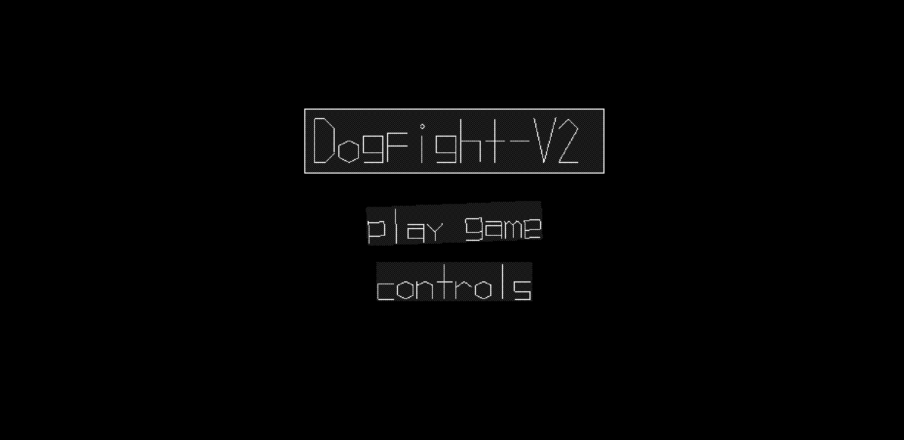
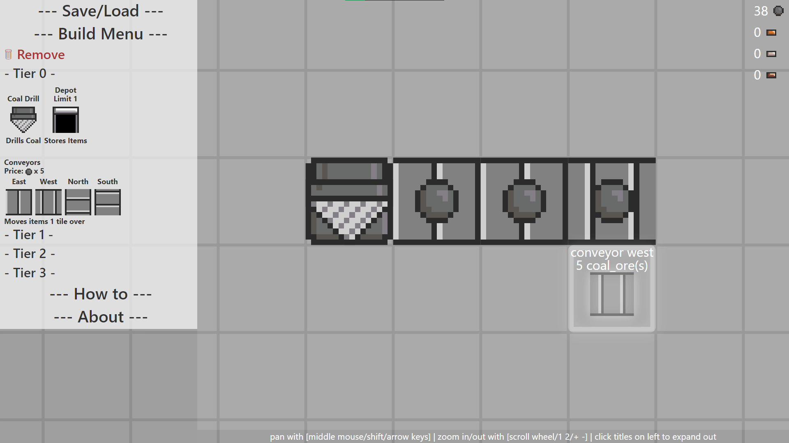
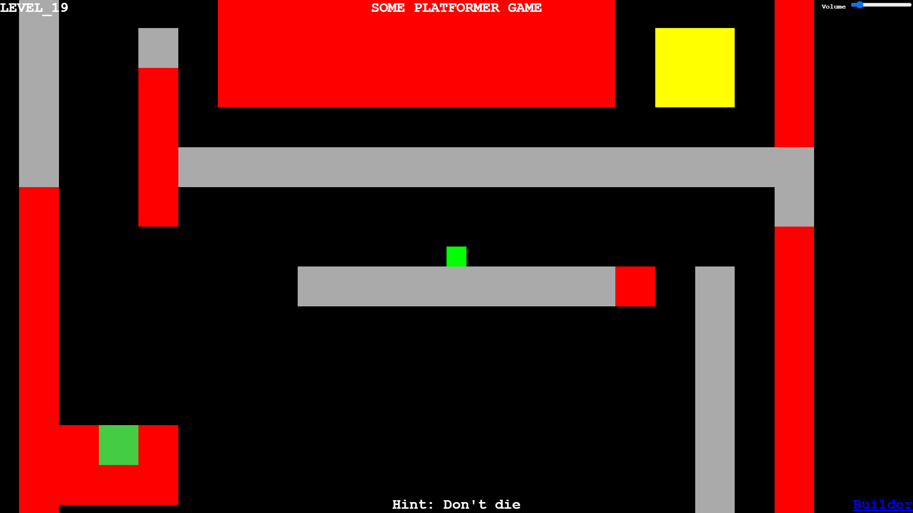
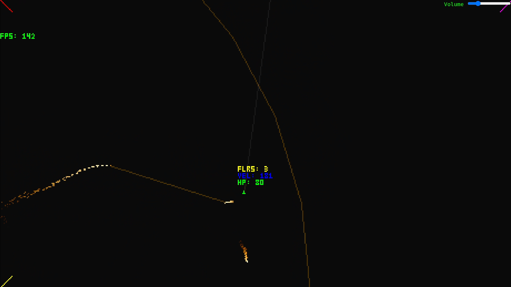
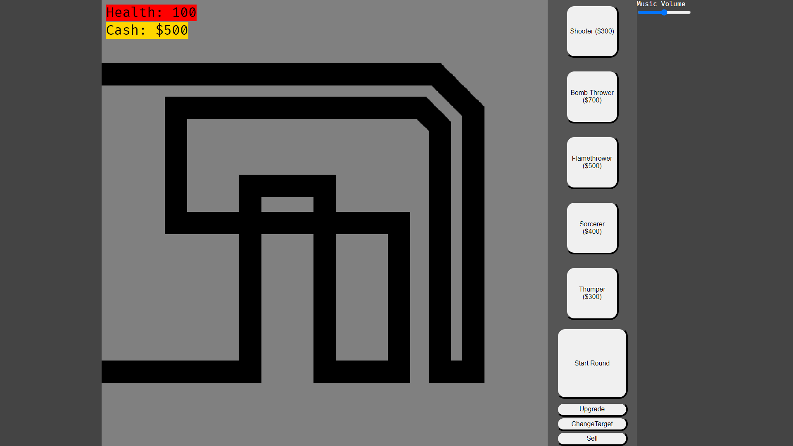
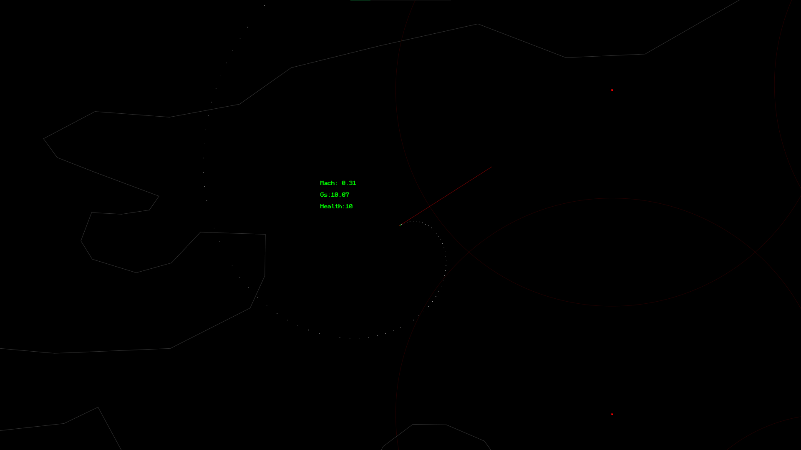
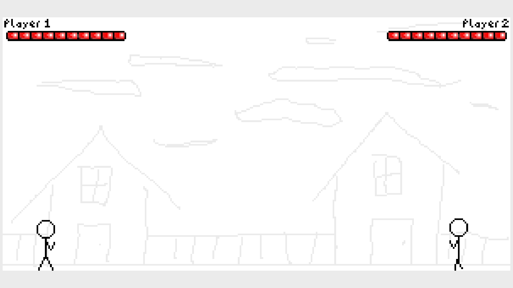
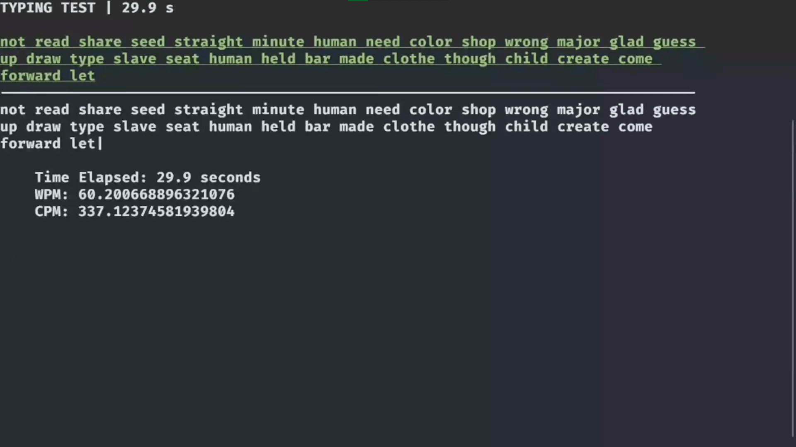
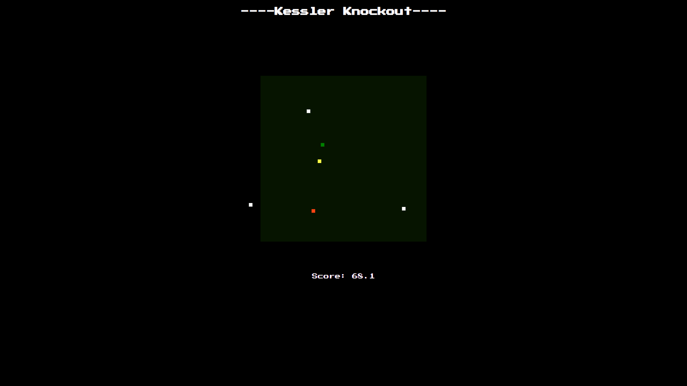

Projects
Conveyor

This is the third iteration of the missile dodge game. This is the most polished looking version of the game.
One challenge with this version is that I used WebGL for the rendering instead of basic CanvasRenderingContext2D. I created a large libary for drawing different polygons with WebGL.
The text in the game used vector graphics. I modeled the characters for the ascii alphabet using Blender, and wrote a script in Python to generate Typescript code that contained all the points for each letter automatically. That way, if I didn't like how a character looked, I could change it on the fly.
Conveyor

This is a tiled conveyor belt game that I made for CS50x. I didn't use the canvas element to make it, rather, I used CSS tranforms to move everything around.
There were some challenges I had while I was making it. One that comes to
mind is dealing with the amount of items moving around in the game. All of
the items are HTML <img> elements. When objects would
get deleted, I would initially remove the element, then create a new one
if I needed one. The problem with this is that it did not run good on
the browser. I ended up creating a pooling system where I turn a bunch
of them invisible and reuse them instead of creating new ones. I didn't
know what to call it at the time, but that is the solution I landed on!
Simple Box Platformer

This is a platformer game that I made for the fun of it. It has a basic level editor.
The game is rendered onto an HTML canvas. The canvas is rendered at a low resolution. The css can scale and rotate the canvas around the screen. When you play on a bigger map, the actual size of the canvas changes.
Dogfight

Missile Evasion game. This is the second iteration I had on this idea. The first was Missile Dodge.
The rendering for the game is pretty rudimentary. It is going over all of the pixels and manually setting the color values. Setting higher resolutions can cause it to lag. The advantage of doing it this way is it lets me do the cool fire effects.
Tower Defense Game

This is a tower defense game that I made (inspired by Bloons Tower Defense).
Missile Dodge

This is the first iteration of the missile dodge game.
The game uses vector graphics with Canvas2D functions to render things. One challenge I had was creating an algorithm to have the missile predict where the player is going to be next.
Missile Dodge

This is a fighting game that I made.
One of the 5challenges for this game was the pixel art. The animation for the stick figures was pretty fun to do.
Missile Dodge

This is a terminal typing game that I made. It is a typing test game where you can see your words per minute.
Missile Dodge

This is the first game that I ever made. It is a bullet hell where persistant obstacles are gravitationally attracted toward the player. Upon losing health, the bounds that the player is allowed to traverse contracts, limiting the play area. The gravitational force increases over time.
About Me
Basic Introduction
My name is Ricky Owings. I program in my free time. I would like to get a job in the industry one day.
My Progression
When I was in highschool, I did a programming club for one day. I didn't learn much at the time, but it planted the seeds for me to get into it later on.
I used to play a game called Garry's Mod. This is a sandbox game built off of the Source engine. I would create tanks in the game with a mod called Armoured Combat Framework or ACF for short. To control the vehicles, you would wire up the brakes using another mod called Wire Mod. You could hook all of the controls for the tank into what is called an Expression 2 chip, which could take inputs and outputs. You could then use a programming langauge to write the logic for the chip. This was the first language that I got into.
I then taught myself Javascript, HTML, and CSS with Codecademy and some Youtube tutorials. The first game that I made was Kessler Knockout which you can find on the projects page.
I took the CS50x course by Harvard. This was a good experience for me as I got to learn C, Python, and SQL, brushing up on some web stuff along with that. At the end of that course, I created the game Conveyor. At the time, this was one of the most polished games that I have made. Looking back on it, the code looks pretty ugly to me now.